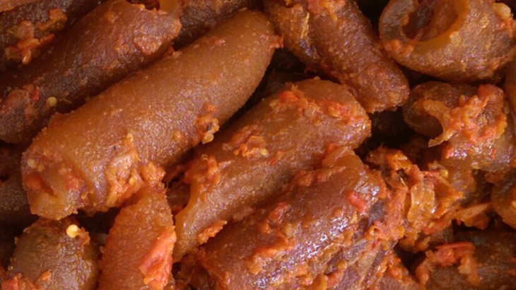

WHAT DOES PONMO CONTAIN
“A 100g of boiled, thick cow skin contains about 224.65kcal of energy, 6.80g of carbohydrate, about 43.9g of water, 46.9g of protein, 1.09g of fat, and 0.02g of fibre. For micronutrients, it contains small amounts of calcium (61mg), iron (4.3mg), magnesium (12mg), phosphorus (36mg) and Zinc (6.79mg).Although Ponmo has low nutritional value when compared to other protein sources because it doesn’t contain all essential amino acids, it contains a lot of collagen which is the most abundant protein in our bodies. Because our bodies produce collagen, it is not essential that we must eat collagen for growth. However, as we grow older, our ability to produce collagen reduces leading us to have wrinkles.”
Here are some of the possible nutritional benefits that can be obtained from eating kpomo.
Kpomo has a low level of calories, and this helps in losing excess weight. One piece of kpomo has only 47 calories. Reducing your consumption of calories will reduce your energy intake and also help you lose weight.
Kpomo contains zinc which is one of the essential minerals needed for the proper functioning of the body. Zinc deficiency can lead to hair loss, weight loss, eye problems, and diarrhea. Zinc is essential for the proper development and function of the male sex organs. It is also involved in the activities of almost all enzymes that take part in digestion, metabolism, muscle and nerve function, and other activities in the body.
Here’s a breakdown of nutrients in 100g of boiled, thick cow skin: